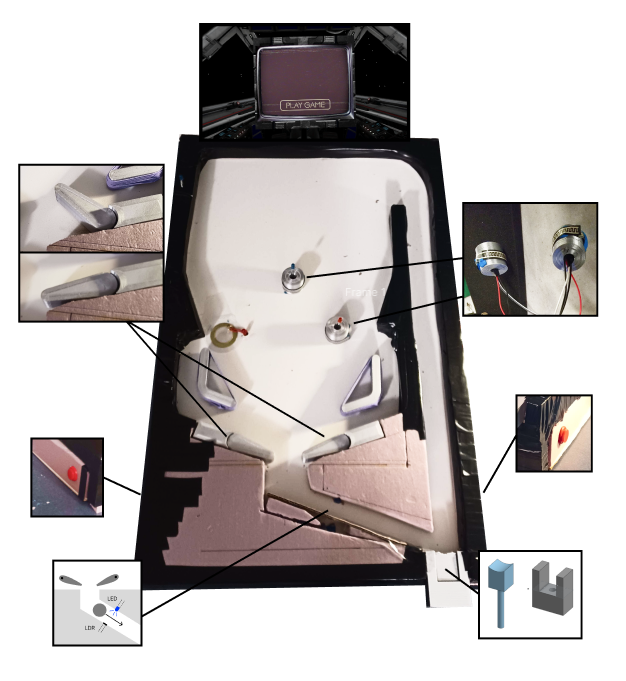
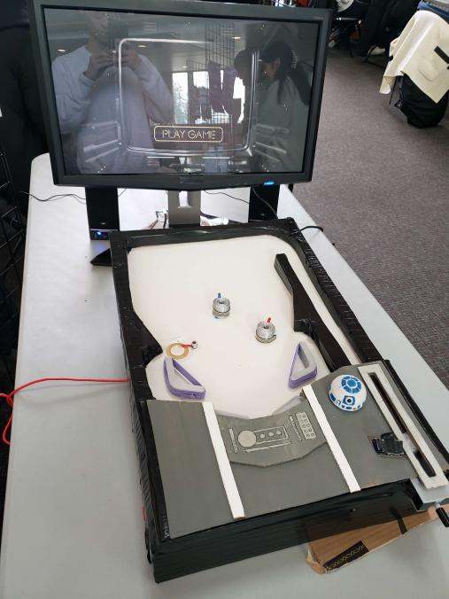

IAT 267: Introduction to Technological Systems was an extremely fun class that introduced many hardware elements to build upon our prior coding knowledge. With basic circuit integration with an Arduino and sensors, students brought many projects to life. The course’s final project was a fun challenge split among a group of 4 with an open ended criteria within an appropriate project scope. For the final month, my group and I chose to build a pinball machine.
After settling on creating a pinball machine, we split the work where each individual would work to their comfort. Several meetings were held to update each other and occasionally collaborate on overlapping sections. As our circuit elements were delivered, we ran into some issues with our initially proposed method. In the planning process, we initially wanted to use an electric solenoid to actuate the flippers inside the machine. However when experimenting with the solenoids we purchased, we found the resulting force extremely weak. We managed to find an alternative in the form of the servo motors found in our course kits. This alternative would trade the responsiveness and speed of the solenoid in favour of power and consistency for the flippers.
As the final week approached before the presentation, a hardware error occurred with one of our flex sensors. We utilized 3 flex sensors wrapped around a cylinder to act as a bumper for the pinball to bounce off of, but one of the sensors was damaged in transit. Short on time and resources my team managed to find an alternative with a piezo force sensor that functioned similarly in the game and within the circuit.
From this project, I developed many skills in working with circuit hardware and code as well as group work. Throughout the many different obstacles encountered, our clear communication, careful planning, and proposal of solutions helped us overcome our issues.